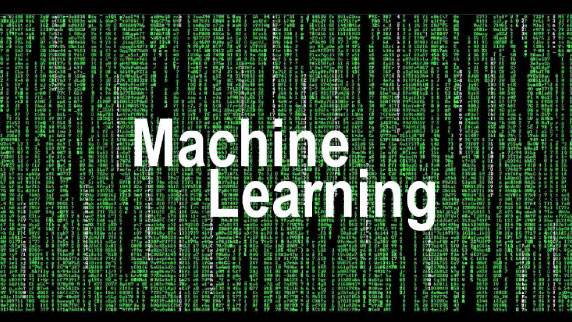

机器学习>网络开发？来看外国网友怎么说

最近在Quora上看到一个很有意思的问题Is machine learning and deep learning a better career than web development now?其中一个回答罗列了几个理由说明为什么web开发是更好的选择，在机器学习/深度学习狂热的时候，这个回答可以供大家参考。
许多聪明的年轻人这样问他们自己并不是没有原因的。没错儿，机器学习非常重要而且待遇也很好，但什么是“更好的职业”呢，尤其当我们将它和Web开发对比的时候？
下面列出五个理由，说明为什么web开发时比机器学习更好的职业。
1.有非常旺盛的职位需求
每个人都需要一个网站，或者给网站添加一个新的功能。web开发的需求量是非常大的-除非有人能关掉互联网。机器学习有非常高的门槛，而且竞争已经转移到目前世界上最好的大学。
2. 工作相对简单但回报不错
我并不是说这项工作有多么的炫酷。我并不痴迷于web开发，但有些人非常喜欢它。这项工作有跳转，但都是技术性的，这意味着如果你掌握了框架和浏览器，你基本上可以胜任。
3. 非常容易学习
对机器学习而已，除了线性代数、统计学和优化理论等，还有很多需要去学习掌握，而这一过程并不像在公园散步那样轻松。但是web开发对数学的要求基本为零。
4. 你有很大的机会发财
我们得承认，大多数能挣钱的优秀产品都是围绕着顾客需求，而不是非常炫酷的发明。Facebook没有用神经网络（注：这应该是说facebook刚起步的阶段），Snapchat、Dropbox等也没有。
5. 你知道可能发生的事
加入你要去构建一个网站，规划功能模块，草图设计，然后开始码代码。你不需要什么魔法，只要每天完成你的工作，敲敲代码，喝喝咖啡，就能挣到工资。你知道最终这个网站将会有你所设想的功能，但是机器学习并不是这样。
So, if good odds are what you are after - web development is your choice. Everything is gonna be fine.